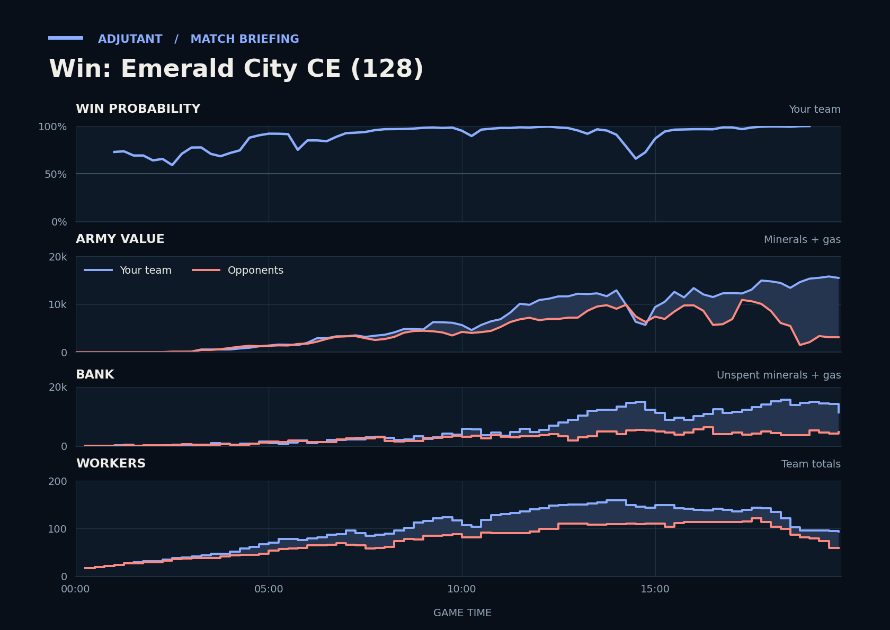

Cached narration uses different analysis inputs (facts, engine notes, prompts or model settings). It has not been regenerated for this report.
Win. Going into the fight across their bases, TakeTheTip's army was twice the size of the one facing it.
Why
17:30–18:20: TakeTheTip killed 32 Marines while ELVergacorta's Ultralisks hit TakeTheTip's bases, and left with the bigger army.
18:21–19:42: Hidden: ELVergalarga's army was about 1,300 going in; TakeTheTip's Lurkers killed ELVergalarga's Starports, and they left first.
18:53–19:28: Scallop's Battlecruiser killed ELVergacorta's Hive, Spawning Pool and Baneling Nest; TakeTheTip then typed gg.
Try next game
TakeTheTip: When a base flashes red on the minimap mid-fight, tap spacebar and pull the Drones; at 18:22 you took 13 s to look. Check: you are looking at that base within 6 s of the alert.

Written by claude-sonnet-5-5 from a different set of analysis inputs.
Current engine analysis: turning points, whole game, habits
Debrief
Win. Review 2:30–4:30: army value: yours 0→900, theirs 0→1,325. The biggest fight came at 17:45–19:42 (10,625 lost, 19,100 killed).
Team MMR 3731 vs 3486 against ELVergalarga (Terran), ELVergacorta (Zerg). Starting win chance 73%.
Try next game
TakeTheTip: answer Ultralisks with Brood Lords. Check: at least 8 of those within two minutes of their first Ultralisk.
TakeTheTip: answer Siege Tanks with Brood Lords/Mutalisks/Ravagers. Check: at least 6 of those within two minutes of their first Siege Tank.
TakeTheTip: around 13:31, when their army heads to your bases, send the team's army back early or pull workers; check: fewer than 5 workers lost.
Turning points
2:30–4:30: army value: yours 0→900, theirs 0→1,325. Win chance 59% to 88%.
Army value: yours 0→900, theirs 0→1,325.
What moved the win chance: army +10%, economy +8%
6:14–7:44: an even trade (2,300 killed, 2,150 lost) while your position improved. Win chance 85% to 97%.
Scallop lost 19 SCVs between 7:05 and 7:15, to Marines (15 kills), Cyclones (4).
You killed 14 enemy workers (11 of them ELVergalarga's), with Banshees (13 kills), unknowns (1).
Fighting: you lost 1,200 of army and killed 1,600 of theirs. Going in, your armies were worth 2,900 against their 2,200.
Your losses: 2 Banshees, 16 Zerglings, 3 Hellions; killed mostly by Marines (9 kills), Cyclones (8).
In your earlier games, when TakeTheTip had lost 21+ workers to enemies by 15:00, you won 37% (38 games) vs 56% otherwise (78 games).
Try: TakeTheTip: around 13:31, when their army heads to your bases, send the team's army back early or pull workers; check: fewer than 5 workers lost.
15:01–15:08: an even trade (925 killed, 1,200 lost) while your position improved. Win chance 87% to 96%.
You killed 6 enemy workers (6 of them ELVergacorta's), with Lurkers (6 kills).
Fighting: you lost 1,200 of army at their bases and killed 625 of theirs. Going in, your armies were worth 9,700 against their 7,400.
Your losses: 4 Lurkers; killed mostly by Liberators (4 kills).
Their losses: 7 Marines, 1 Siege Tank.
What moved the win chance: army +4%, tech +3%
Across the whole game
Enemy Ultralisks (they made 22) destroyed 11,475 of your value (43 Drones, 15 Roaches, 14 Hydralisks). Counters built after they first struck at 13:12: Scallop made none; TakeTheTip made none.
TakeTheTip had 10,773 unspent at 18:15.
Scallop had 6,178 unspent at 14:15.
Enemy Siege Tanks (they made 13) destroyed 2,800 of your value (13 Roaches, 5 Drones, 2 Hydralisks). Counters built after they first struck at 13:31: Scallop made 2 Banshees; TakeTheTip made none.
Enemy Liberators (they made 12) destroyed 4,650 of your value (7 Lurkers, 7 SCVs, 4 Siege Tanks). Counters built after they first struck at 14:28: Scallop made 16 Vikings, 12 Missile Turrets; TakeTheTip made 34 Hydralisks.
Engine debrief-v3-0.7. Losses count only units killed by an enemy. Win chance comes from a model trained on your earlier games.
Earlier replay bookmarks
Earlier moments to revisit, considering both teammates. Each row groups nearby losses. Engine and chart windows may include other simultaneous losses. Values are minerals + gas. These bookmarks do not grade the decisions.
Local losses: Scallop lost 4 Hellions, 1 Reaper (500); TakeTheTip lost 1 Overlord (100); duo total 600; opponents lost 2 Queens (350)
Other recorded losses in this window: Scallop lost 4 SCVs (200)
Local losses: Scallop lost 19 SCVs (950); TakeTheTip lost 16 Zerglings (400); duo total 1,350; opponents lost 8 Marines, 1 Cyclone (650)
Other recorded losses in this window: Scallop lost 1 Banshee (250); TakeTheTip lost 1 Overlord (100); opponents lost 8 SCVs, 1 Siege Tank, +3 others (950)
Local losses: Scallop lost 8 SCVs, 1 Missile Turret (500); TakeTheTip lost 3 Zerglings (75); duo total 575; opponents lost 16 Marines, 2 Medivacs (1,200)
Other recorded losses in this window: opponents lost 1 Zergling (25)
Replay map
◎ Historical player start · ◇ Resource cluster · ■ Completed grounded hall · □ Unfinished hall · ✕ Recorded hall ending Dashed rings show recorded events during the selected interval, not simultaneous live state. Symbols and player labels accompany colors.
Hall state
Unplaced halls
Recorded events and source evidenceExact map, registration and resource-site sources
Positive resource-site occupancy is recorded hall presence. Mining, vision, routes, local army availability and map control are unknown. The MMR-conditioned model estimate is unchanged. This panel cannot establish what caused a probability drop.
Older V2 evidence cards
Evidence-first cards are generated independently from the predictive model. Each card separates replay evidence, interpretation, past-only comparison, and an adjustment to test.
Action
Scallop increased loss-adjusted army investment while TakeTheTip retained an unspent bank
Interpretation
The two-player state moved in different but potentially coordinated directions: TakeTheTip retained unspent resources while loss-adjusted current plus in-progress army investment growth stayed low, and Scallop increased loss-adjusted current plus in-progress army investment by about 2175 after accounting for cumulative army losses. The live-structure count is infrastructure evidence and may include addons, flying structures, or morphing structures; it does not establish queue occupancy or current training capacity. This is coordination context, not a finding that either player caused the outcome.
Adjustment to test
Before the next comparable pressure window, agree which player converts the bank and which player continues army investment; check at the next checkpoint that both the spending trigger and investment response occurred.
Confidence: mediumVisibility: Team retrospective
Evidence chain and comparison
Evidence
replay_fact Scallop: Factory Tech Lab complete at 12:07
replay_fact Scallop: Factory complete at 12:13
replay_fact Scallop's cumulative combat-army loss value was 3500 at 720s and 4000 at 810s (delta +500). at 13:30
replay_fact Scallop's current plus in-progress army investment was 2275 at 720s and 3950 at 810s (delta +1675). at 13:30
replay_fact Scallop's loss-adjusted army investment growth was +2175 (raw delta +1675 plus army-loss delta +500; adjusted swing 2175). at 13:30
replay_fact TakeTheTip's cumulative combat-army loss value was 975 at 720s and 1075 at 810s (delta +100). at 13:30
replay_fact TakeTheTip's income was 4882 at 720s and 5005 at 810s (delta +123). at 13:30
replay_fact TakeTheTip's loss-adjusted army investment growth was +75 (raw delta -25 plus army-loss delta +100; adjusted swing 150). at 13:30
replay_fact TakeTheTip's observed live production-structure count was 4 at 720s and 5 at 810s (delta +1). at 13:30
replay_fact TakeTheTip's supply headroom was 10 at 720s and 16 at 810s (delta +6). at 13:30
replay_fact TakeTheTip's unspent resources was 5195 at 720s and 7183 at 810s (delta +1988). at 13:30
Past-only comparison
7 comparable prior wins; median loss-adjusted current plus in-progress army investment change +1975 at matched clock endpoints. Support: 7. Comparable replay IDs: Multiplayer/Emerald City CE (64), Multiplayer/Emerald City CE (67), Multiplayer/Emerald City CE (69), Multiplayer/Emerald City CE (70), Multiplayer/Emerald City CE (72), Multiplayer/Emerald City CE (76), Multiplayer/Emerald City CE (77).
Provenance
Evidence source IDs: Multiplayer/Emerald City CE (128)::production::0118
Baseline replay IDs: Multiplayer/Emerald City CE (64), Multiplayer/Emerald City CE (67), Multiplayer/Emerald City CE (69), Multiplayer/Emerald City CE (70), Multiplayer/Emerald City CE (72), Multiplayer/Emerald City CE (76), Multiplayer/Emerald City CE (77)
Retrospective replay-state association; it does not establish causation or what was knowable during play. Cancellations, tech savings, and army position or visibility are not reconstructed from these state totals. Reference windows are one per unique replay/series, strictly earlier than the target, explicit-result wins only, and use endpoints at or before each target endpoint within the configured clock tolerance; this is clock-only context, not a full pre-window state match.
Action
Scallop sustained an unspent bank while army investment stayed low
Interpretation
Across 7 sampled checkpoints, Scallop retained a sizeable unspent bank while income stayed above the positive threshold, supply headroom stayed above the threshold, observed live production-structure count was positive, and loss-adjusted current plus in-progress army investment growth stayed low. The live-structure count may include addons, flying structures, or morphing structures; it is infrastructure evidence and does not establish queue occupancy or current training capacity. Cumulative army-loss fields are included so replacement investment is not mislabeled as no conversion. The replay shows an opportunity to test spending timing; it does not show why the bank was held.
Adjustment to test
At a comparable checkpoint next game, set a spending trigger: convert part of the bank into army or in-progress army investment while keeping a small supply buffer, then review the next checkpoint for lower bank and higher investment.
replay_fact Scallop's cumulative combat-army loss value was 1300 at 525s and 2750 at 615s (delta +1450). at 10:15
replay_fact Scallop's current plus in-progress army investment was 2650 at 525s and 1200 at 615s (delta -1450). at 10:15
replay_fact Scallop's income was 2574 at 525s and 1219 at 615s (delta -1355). at 10:15
replay_fact Scallop's loss-adjusted current plus in-progress army investment growth was +0 (raw investment delta -1450 plus cumulative army-loss delta +1450; adjusted swing 0). at 10:15
replay_fact Scallop's observed live production-structure count was 7 at 525s and 8 at 615s (delta +1). at 10:15
replay_fact Scallop's supply headroom was 23 at 525s and 48 at 615s (delta +25). at 10:15
replay_fact Scallop's unspent resources was 822 at 525s and 1317 at 615s (delta +495). at 10:15
Past-only comparison
8 comparable prior wins; median loss-adjusted current plus in-progress army investment change +1725 at matched clock endpoints. Support: 8. Comparable replay IDs: Multiplayer/Emerald City CE (64), Multiplayer/Emerald City CE (67), Multiplayer/Emerald City CE (69), Multiplayer/Emerald City CE (70), Multiplayer/Emerald City CE (72), Multiplayer/Emerald City CE (75), Multiplayer/Emerald City CE (76), Multiplayer/Emerald City CE (77).
Provenance
Baseline replay IDs: Multiplayer/Emerald City CE (64), Multiplayer/Emerald City CE (67), Multiplayer/Emerald City CE (69), Multiplayer/Emerald City CE (70), Multiplayer/Emerald City CE (72), Multiplayer/Emerald City CE (75), Multiplayer/Emerald City CE (76), Multiplayer/Emerald City CE (77)
Retrospective replay-state association; it does not establish causation or what was knowable during play. Cancellations, tech savings, and army position or visibility are not reconstructed from these state totals. Reference windows are one per unique replay/series, strictly earlier than the target, explicit-result wins only, and use endpoints at or before each target endpoint within the configured clock tolerance; this is clock-only context, not a full pre-window state match.
P(win) is an MMR-conditioned model estimate. Economy and Army Position compare the duo to historical positions at similar game times; they are not model-contribution lanes.
Raw State Comparisons
Observed tracker values, not race-normalized scores. Duo and opponent totals are shown alongside TakeTheTip and Scallop so the normalized lanes above can be checked against the underlying army, economy and bank quantities.
Observed Combat Outcomes
Positive bars favor the duo; negative bars favor the opponents. Each bar summarizes the preceding 15 seconds at a sampled boundary; selected-window summaries exclude future events. These observations do not prove the correct alternative decision.
Factual Replay Timeline
These milestones are replay facts synchronized to the selected window. They are context, not claims about what caused the result.